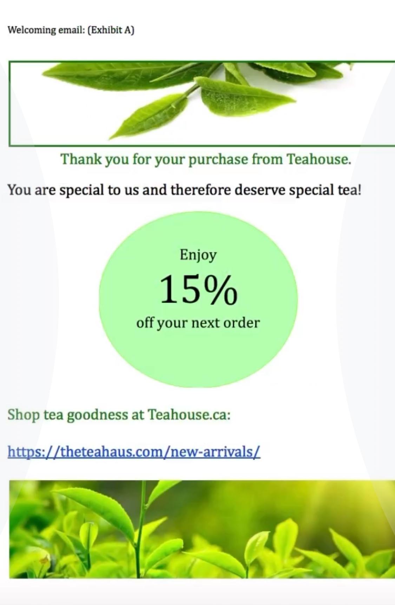

Brewing engagement: creating personalized welcoming emails and Facebook ads to build strong relationship
This is a copy sample of the project I was involved in working with a client and their tea business startup. Here I walk you through personalized welcome email options as well as targeted Facebook ads to ensure positive user experience and introduction to the brand, as well as encouragement of repeat visits.
Our two communications are:
1) Welcoming email for those clients who purchased tea online from teahouse.ca
2) Online advertisement on Facebook of Teahouse store in London, Ontario to attract people to visit the store.
Welcoming email:
1. The purpose is to make the clients to come back to the website and continue purchasing from the company. On the more personal side, the welcoming email makes the customers feel that they are wanted and is rewarded when they purchase/give their personal information (hence the reward of 15%).
2. Proving email address when making a purchase and/or subscribing to newsletter on the Tea House website.
3. When the client subscribes to newsletter or completes a purchase he/she gets notification from the company’s email with welcoming email back.
4. More people subscribing to newsletter, giving their emails and using the coupons that are provided/will be provided in the future.
5. A/B testing (see Exhibit A and B images below)

6. Subject line “ Thank you for your purchase from Teahouse” is a way to thank each of our customer right of the bat and make them feel appreciated for their efforts (scroll through the website, go through checkout process etc.) and trust (giving their email)
7. Our chosen personalization string is the phase “ You are special to us and therefore deserve special tea” is a direct and personal message to the customer to let him/her know that we consider him/her special and therefore they deserve/can expect high-quality products for them.
8. We use banners with bright colors connected to tea and a circle with 15% off info that draws customer’s attention and is primary focus on the page. The colors and bigger font of the discount attracts the customer and is straight to the point.
9. If the customer subscribes to newsletter and uses our coupon we will send him/her email saying congratulations, you save x amount of money and then offer them to look at our discount system or sales that are going on at that time so they may know how/where they can save more money. If the customer get the email but doesn’t use the coupon we will send him the email about 2 weeks later asking how do they like the product and suggesting them to learn and explore more on the website.
Facebook ad:
1. The purpose is to promote the Teahouse store and persuade customers to go visit the place and check out the products available, invite their friends, get great experience with the company and the place and long-term become a client that visits often.
2. When a customer is online, on social media, looking for a nice place where he/she can get quality tea and enjoy a good atmosphere.
3. The search and loading time it takes for client to see our ad on Facebook.
4. A certain number of people clicking on ad on Facebook page, like, repost and visit the story, ultimately.
5. A/B testing (see Exhibit A and B on the images below)
6. We are starting with a bang- phrase (subject line): Teahouse-best place to buy tea! that attract customers and make them read the ad further and roots the expectation.
7. We use a personal invitation to visit the store that shows that we want the customer there and we consider him/her an important and special person (hence “cordially invited” Then we use bullet points to describe why the place is worth checking out. We also create a new name for our place, using the name and the adjective together, which customers tend to enjoy when they see the ad. (Teawesome)
8. We mostly use pictures of the place to showcase strong points of the place (nice aesthetically pleasant atmosphere, a variety of tea choice etc. It gives the client an impression of the place in a simple and effective way that makes him/her interested.
9. When we see that the person like/reposted the ad on his/her personal Facebook page we can send them emails with call to action to check the Teahouse online store and establish a relationship with them by having them subscribed to newsletter on the website and giving them discounts/coupons in the future. if the person doesn’t repost but goes to the store after seeing the ad, when the client is in the store we can give them a note with their order asking how they knew about the place and space to provide email if he would like to become a client and get benefits and then we can send emails with coupons to people who agreed.
Advantages of using Wordpress as the main tool to create and manage websites quickly ands efficiebtly
Julia Dziuba
October 2024
When building a website, the Wordpress software is a powerful tool that allows to build and maintain websites easily, without much knowledge of coding.
For the upcoming project the requirement phase will need the developers’ team to have basic knowledge of HTML, CSS and Javascript. The knowledge of CSS will help with designing the website, providing the opportunities to change the style and aesthetic of the website. Knowing CSS language will provide the provide the opportunity to change the style of the website by coding manually, when there is a challenge to provide the necessary aesthetic by just using the Wordpress functionality.
The main CMS software we are going to be using is Wordpress, due to its convenient and transparent interface and clear functionality. Wordpress has multiple advantages for website building such as:
- Wordpress is a flexible platform which allows us to build almost any kind of website, from a personal blog to professional interfaces for corporate institutions. It provides numerous themes to choose from to create the website we want and even gives the opportunity to customize the interface of the website to help serve its purpose best.
- Wodpress makes it easier to publish the content we create and make the necessary adjustments along the way like inserting media, formatting pages etc. and do it faster than other CMS.
- It provides the tools to publish at any time and create our own schedule that is set to adjust to the objective of our website. We have the opportunity to make multiple posts in advance, set the schedule as to when each of them should be posted and have Wordpress post them automatically, which is a very beneficial feature.
- We have the opportunity to manage the amount of access our employees have to the website, which changes they are allowed to make and what/how much contribution each person is allowed.
- It has easy theme selection system, meaning that we have multiple themes to choose from to make the website appealing and transparent with the purpose it serves. We even have the opportunity to upload our own themes and make adjustments to our liking.
- Wordpress has numerous plugins to install the necessary functional tools that is necessary/helpful for the type of website we are building. Plugins are helpful for social networking, commerce, calendars, overall functionality etc.
- Search engine optimization. Wordpress has a lot of beneficial features that help to attract and maximize the number of visitors and ensure high-speed traffic to the website. The platform “tells” us how good each of our posts are in terms of attracting new clients and holding our target audience. We also have the opportunity to see the mistakes that we made, and follow the recommendations Wordpress gives us to make our post/page SEO optimized and have high traffic of visitors and ensure they turn into customers.
Moon sign in astrology
Did you ever feel like you are not at all like your zodiac sign? That's probably because your moon sign is stronger!
Your moon sign is responsible for your inner self, your emotions! It is who you are from deep within,
your deepest emotions, instincts, thoughts, It is the way you think, the way you react to things, what
you crave for inside. Most importantly, it shows what you need to feel fulfilled!
If you have a fire moon (moon is Aries, Leo or Sagittarius) - you crave action and adventure. You need
to have a passion and the environment that allows you to live it out! You need to constantly channel
your energy to work on the things you love. You crave adventure, because it inspires you like nothing
else. You need variety that the world can offer, experiences to enrich your mind and your soul. You need
your tribe of people, who want to see you succeed and push you to become better every day.
If you have an air moon (moon in Gemini, Libra or Aquarius) - you need communication and
mind-stimulation. You need to have the ability to share your ideas and thoughts and have people around
who are willing to listen. You love learning and learning new things is a must for you to feel
fulfilled.
If you have a water moon (moon in Cancer, Scorpio or Pisces) - you need comfortability and nourishment.
You need to feel comfortable in your surroundings to feel safe with showing your emotions. You need to
feel that people care for you and will listen to you vent. You need people who are okay with your dreamy
and emotional nature. You need to know you can trust people you are with! You need to feel the
nourishment and care of people around you.
If you have an earth moon (moon in Taurus, Virgo or Capricorn) - you need to feel stable in your
surroundings. You crave stability and security in all spheres of your life. You need to know that your
hard work is paying off, providing you with the life where you have all you need. You need to feel
secure both in your career and your personal life and you need to be sure people have your back at all
times.
Love letter for air signs
Free-spirited, witty, charismatic, caring and friendly - be proud of your Air element!

Keep you head in the clouds and your feet dancing on the ground.
Dear Air signs - you are excellent at communication and making new friends. You make everyone feel
included, make everyone feel like they can let loose and be themselves. You are some of the smartest,
most eccentric people out there and you constantly inspire others with your wit and your
intelligence.
You make people feel comfortable since you accept their weirdness. You crave interesting people who love
to goof around. You make the world a funnier place, where everything is a fun quirky adventure.
Love letter for earth signs
Thoughtful, hard-working, determined, selfless, reliable - be proud of your earth element!
For better, for worse, I got you!
Dear Earth signs, you are the most selfless people out there! You want people to feel safe, to be fed
and well, you care of your loved ones more than you care about yourselves. You are so nurturing and that
makes everyone feel so loved! You are the people who would drive for hours to see someone you care
about. You are the kind of people your friends call in case of an emergency and are sure you'll pick up
and help them. You find joy in helping people and that is one of the most inspiring things about
you!
You are so determined to achieve your goals, you ambition knows no bounds.You are so resourceful, always
finding creative ways to achieve whatever it is you want. You don't give up, ever! You make people work
hard for success, you challenge them to always thrive for more and never stop learning! You are a proof
that hard work pays off, you make people work for miracle in the mundane world! And you show everyone
that the view is worth the climb!
Love letter for fire signs
Confident, energetic, ambitious, vibrant, fun - be proud to be of a fire element!
Any place anytime, you gotta know for you, I'll fight
Dear Fire signs. You are the giving leaders. You work hard for your dreams and are masters of self-love,
but you are the most loving signs out there. You lead people to discover greatness and goodness in them,
because you genuinely want everyone to succeed! You support the people you love and encourage them to
become their best selves. The success of your loved ones is the most important thing for you. You don't
take anyone's bullshit, you know how to be happy on your own, but, for you, being surrounded by your
loved ones is the place to be.
You are the kind of people who know how to word hard and get things done, but also how to have fun and
live life to the fullest! You inspire everyone to live the life they want and do it unapologetically!
Most importantly, you inspire people to fight for what they want. You fight for miracles, you fight for
happiness and you fight for love!
You celebrate every moment, every victory. You are passionate about everything and that is why you are
so successful in life. You let your passion guide you to magic things, to incredible places and amazing
people. I admire your confidence and your passion and the way you know how to give. Never stop being
such inspiring people!
Love letter for water signs
Caring, romantic, creative, passionate and charming - be proud of your water element!
So many dreams, so little time, tonight, let's shine like stars up above
Dear Water signs - you are the most caring and thoughtful signs. You make people feel like they can tell
you everything. You feel people and make them feel comfortable. At the same time you won't let people
underestimate you- you are some of the strongest people out there and you use your intuition and
creativity to achieve your goals. While you are dreamers, you are also doers and no one should forget
this.
You make people feel comfortable and loved! You look after those you care about and you are inspiring in
the way you give and create.